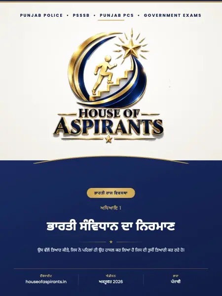

Finished reading? Check what you remember with a quick MCQ test.

Summary
PUNJAB POLICE•PSSSB•PUNJAB PCS•GOVERNMENT EXAMS ਭਾਰਤੀ ਰਾਜ ਵਿਵਸਥਾ ਅਧਿਆਇ 1 ਭਾਰਤੀ 8pਸੰਵਿਧਾਨ &\>ਦਾ (? ਨਿਰਮਾਣ ★ ਉਸ ਵੱਲ ਤਿਆਰ ਕੀਤੇ, ਜਿਸ ਨੇ ਪਹਿਲਾਂ ਹੀ ਉਹ ਹਾਸਲ ਕਰ ਲਿਆ ਹੈ ਜਿਸ ਦੀ ਤੁਸ ਤਿਆਰੀ ਕਰ ਰਹੇ ਹੋ। ਵਬਸਾਈਟ houseofaspirants. in ਐਡੀਸ਼ਨ ਅਕਤੂਬਰ 2026 ਭਾਸ਼ਾ ਪੰਜਾਬੀ
Download
Download ਅਧਿਆਇ 01 ਭਾਰਤੀ ਸੰਵਿਧਾਨ ਦਾ ਨਿਰਮਾਣ (Punjabi) (PDF) - 1.9 MB, 8 pages, hosted on this site. No sign-up, no email wall and no redirect through a third party.
About this file
- File name:
ਅਧਿਆਇ 01 - ਭਾਰਤੀ ਸੰਵਿਧਾਨ ਦਾ ਨਿਰਮਾਣ.pdf - Pages: 8
- Size: 1.9 MB
- Published: 16 October 2026
- Filed under: Study Material
Where this file sits
- Subject: Polity
- Language: Punjabi (ਪੰਜਾਬੀ)
- Chapter: ਅਧਿਆਇ 01 ਭਾਰਤੀ ਸੰਵਿਧਾਨ ਦਾ ਨਿਰਮਾਣ
This page was generated automatically from content/study-material/polity/punjabi /ਅਧਿਆਇ 01 - ਭਾਰਤੀ ਸੰਵਿਧਾਨ ਦਾ ਨਿਰਮਾਣ/. Its subject, language and chapter come from the folders the file sits in, its part number from its place among the files beside it, and its title, slug and description from those. The page count and the summary were read out of the PDF itself - the file is the document.